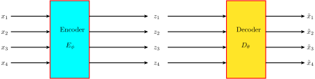

Generative modeling relies heavily on metrics of similarities between two distributions, among which the most commonly used is called the K-L divergence, short for Kullback–Leibler divergence. It is defined below for two distributions with probability density functions and :
| (1) |
K-L divergence has two important properties.
The second term in (2), with the negative sign, is ’s information theoretic entropy. The first term, also with the negative sign, is the cross entropy between and . The first term is always no smaller than the second term per Gibb’s inequality.
The concept of autoencoders predate the VAE. An autoencoder, shown in Figure 1, consists of an encoder and a decoder . , a deep neural network parameterized by , takes a sample from population and maps it to in . , another deep neural network parameterized by , aiming to reconstruct , takes as input and maps it to . is usually of a lower dimension than , and thus is considerd to posess some compression capability and unsupervised feature extraction capability.

The training of an autoencoder minimizes the reconstruction loss: the expected distance between and :
Once trained, the decoder , to some extent, is already a generative model in that it can create samples in given a sample . The distribution of or even the range of , however, is unknown, which prevents its effective sampling. Ideally, we’d like to follow some simple distribution, such as , as it is easy to sample from. As summarized in Figure 2, VAE makes a few changes to the autoencoder architecture to make able to take samples from as input and map them to .
How exactly are and penalized? Compute the K-L divergence between and as below:
In (3), is the dimension of . Removing the constants from (3) and estimating it with samples, our final K-L divergence loss is
| (4) |
The reconstruction loss for VAE, is also slightly different from that for a regular autoencoder. It can be estimated by the following equation, given a function that returns a sample from .
This formulation has one big problem. is not differentiable, which makes the reconstruction loss not amenable to back-propagation based optimization. Luckily, it is easy to rewrite as , where is the element-wise product and is ’s diagonals arranged in a vector form, by leveraging the reparameterization trick for normal distributions. The final formulation for the reconstruction loss therefore is
| (5) |
The total loss combines the K-L divergence loss in (4) and the reconstruction loss in (5) with a weight hyperparameter :
| (6) |
controls the relative importance between reconstructing the original samples and making sure follows . It is likely that different data sets require different .
In practice, instead of outputting , outputs , but that is only a minor engineering detail.
This section derives the total loss objective function through a Bayesian view.
The maximum likelihood method is often used to optimize a neural network that takes samples as input and produces . Assuming each of these are i.i.d samples, the likelihood of observing all of them is . The training objective is to maximize , which is equivalent to minimizing the expected negative log odds:
Considering for now only the decoder part of VAE. It maps a sample to , but it can also be viewed as spitting out parameters for . More specifically it spits out , the parameters in . If the maximum likelihood method is to be used for finding the optimal , is needed which can be calculated this way: . Estimating this way, however, is intractable due to the number of dimensions potentially has.
Assuming there is an effective way of sampling that follows a distribution , which may or may not be equal to , can be calcualted the following way:
Note that in the derivation above, the only requirement of is to be a valid probability density function. Is there such a that is easy to sample from? Yes, that is exactly the responsibility of VAE’s encoder which takes in and spits out the parameters for normal distribution : and ).
With estimated this way, becomes:
With all the derivation steps, it is still not clear how to calcuate precisely.
Given is a concave function, Jensen’s inequality states that . We thus have:
It is now possible to estimate the right hand side of the inequality, broadly known as the Evidence Lower BOund (ELBO), which can be rewritten further:
Since , the second term in (7), as already calculated by (3) in Section 2, is:
At the beginning of this section, is already required to take the form of which means:
If in the process of estimating , only one single sample drawn which is equal to , the first term in (7) gives
Putting the maximum likelihood and the two terms of the ELBO together, we’ve arrived at:
Removing the constants and , our final optimization objective shown above is identical to (6) in Section 2, keeping in mind that
Since the optimization objective is changed from the log likelihoods to the ELBO, it is helpful to understand the gap betwen the two.
The gap is 0 when and are identical.
Section 3’s derivation starts from the maximum likelihood objective, and then switches to maximizing the ELBO. This section provides a simpler joint distribution approach to derive the ELBO objective directly, inspired by Jianlin Su at http://kexue.fm.
In VAE, once trained, the decoder can be used as an independent generative model, without the encoder. The encoder can also be used without the decoder as a descriminative model. The training process is what links both components together. It is reasonable to require them to work on the same distribution about both and . That is, our objective is to minimize the K-L divergence between and :
The definition of the ELBO in Section 3 can be used to verify this.
In VAE’s training process, and are given, VAE learns and simultaneously. Note however that is never directly optimized to match This could be one major reason why VAE is not known to generate very realistic images.
VAE’s encoder, on the other hand, is a very reasonable feature extraction tool. Suppose there are a bunch of sample human face pictures labelled with whether the person has large eyes or not. Denote these samples by where is the image, and if the person has large eyes and 0 otherwise. A vector in calculated the following way probably captures the latent representation of large eyes.
Given any human face picture , should generate a variation of that has big or small eyes as varies.